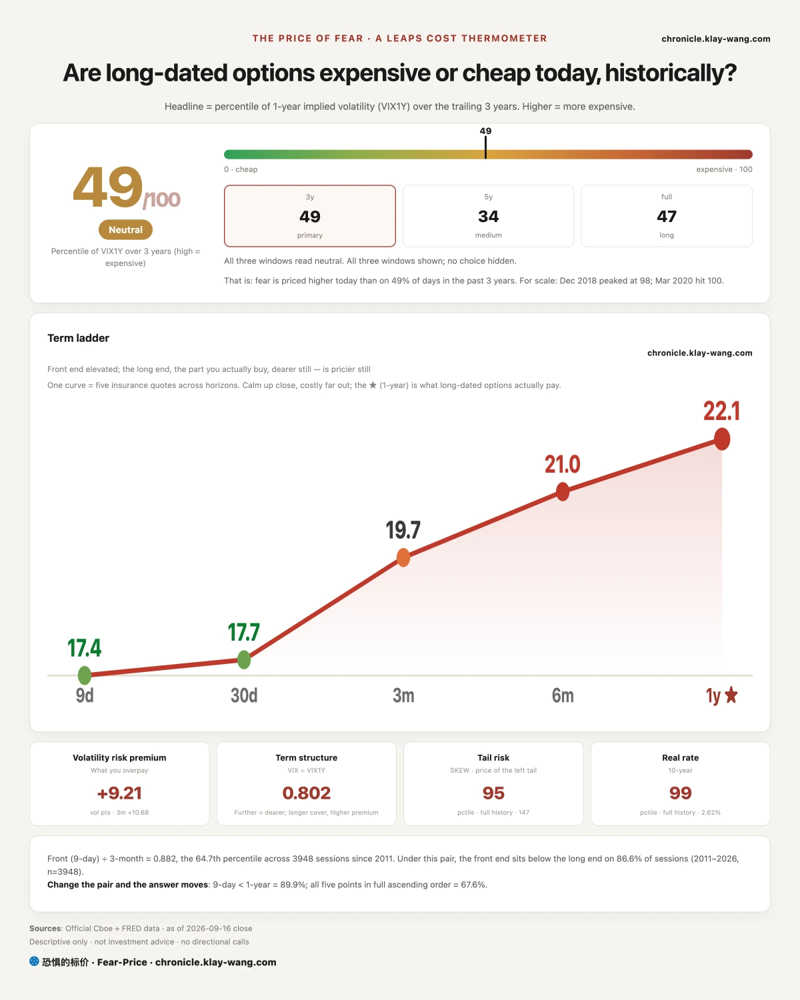
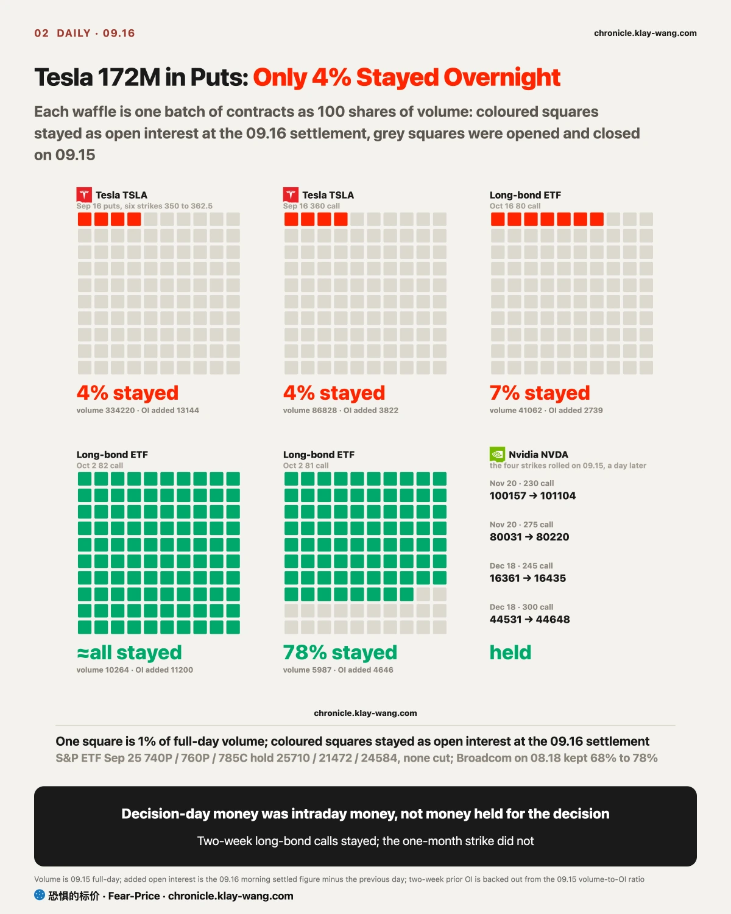
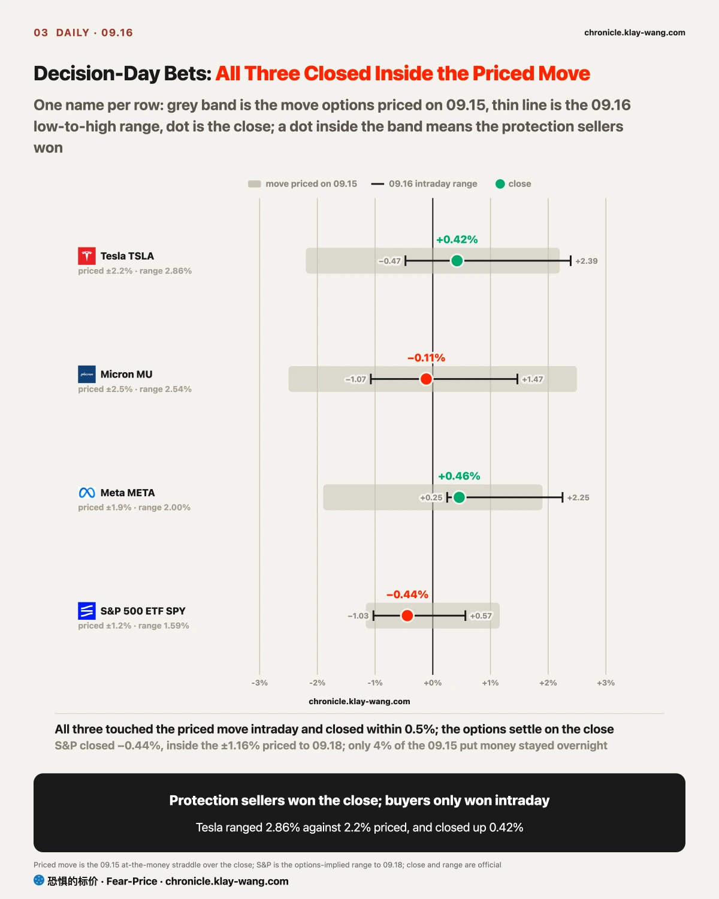
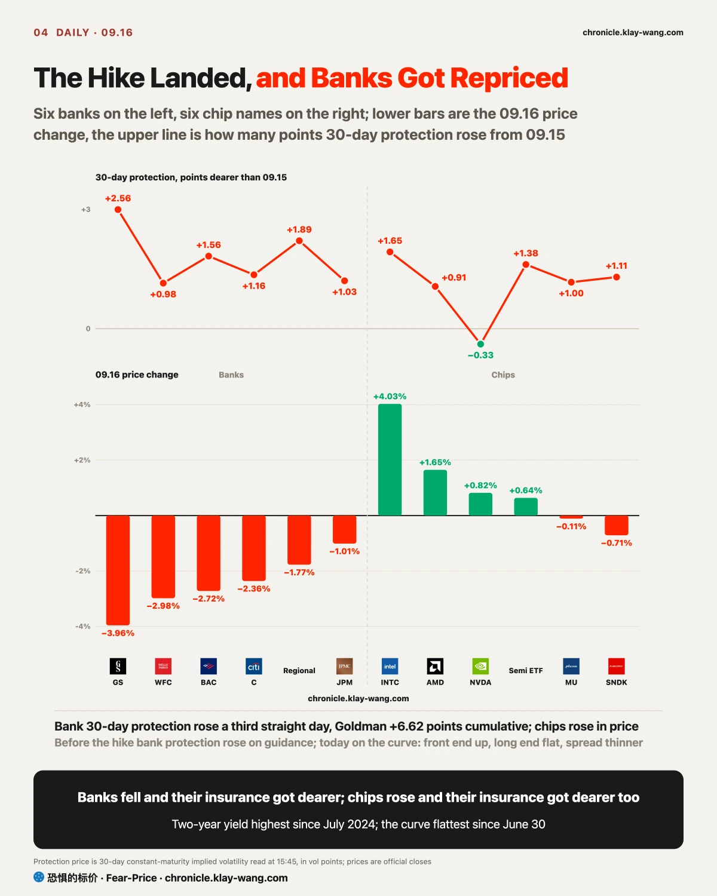
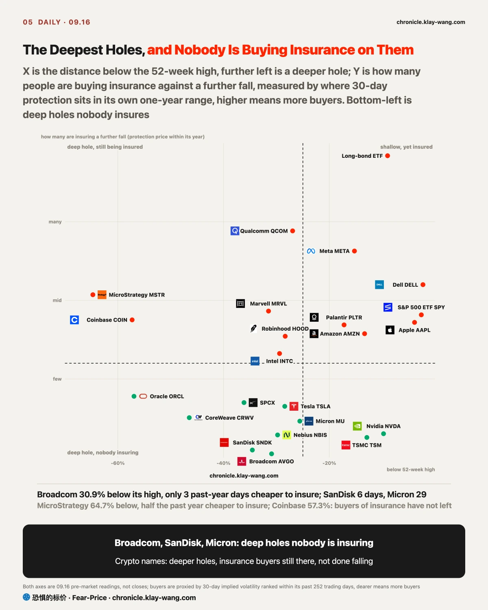
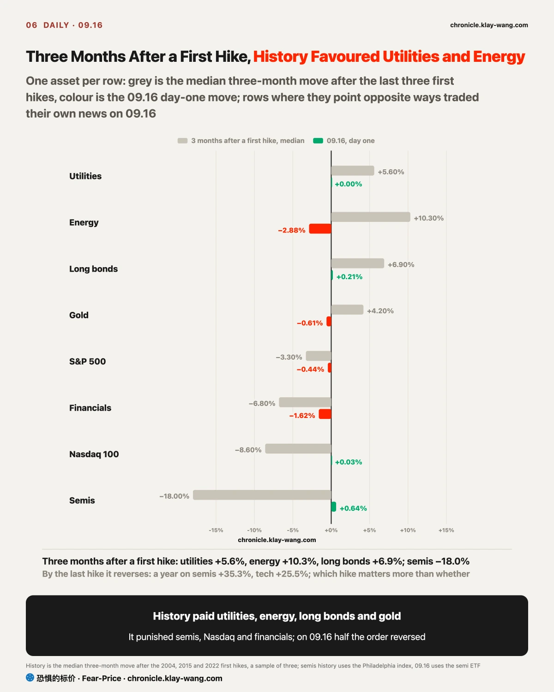

Fear-Price Index · Sep 16, 2026 · 49.3/100: one-year volatility VIX1Y at 22.07, in the 49.3rd percentile of the past three years, where high means expensive. Daily ledger and definitions at chronicle.klay-wang.com · Please credit: Fear-Price Index
Fear-Price at 49.3, from 45.0 on 09.15. The number says how dear one-year insurance is: in the past three years, close to half of all days were cheaper than today. The hike has landed and the one-month and one-year tenors are still rising, so the market is buying insurance on the road after the hike, not on the day.
Mood moves faster than money. CNN Fear and Greed fell from 28.7 to 26.5, with only 17% of days since 2011 more pessimistic; the VIX is 17.71, and dividing the two gives a K index of 1.50, down from 1.67 on 09.15.
The closer K gets to 1, the more the people who say they are worried are actually paying for protection. Not yet: K breaks 1 only if the VIX rises above 26.5 or Fear and Greed drops below 17.7. What it means for you: this is the stage where people are pessimistic in words and have not paid; all 39 times K broke 1 since 2011 came after a stage like this, and the paths are at chronicle.klay-wang.com/kindex.
Short-dated insurance is retreating and long-dated insurance is rising. Insurance against a single crash (SKEW) fell from 152 to 147 and insurance against rates (MOVE) from 84 to 81; one-year insurance rose to 49.3, 3 points short of the 52.5 line set on 09.15. The market has switched from insuring one crash to insuring a slow slide. Last week said bonds were more worried than stocks, on two tests: MOVE above 76 and equity insurance retreating. MOVE is still above 76 and equity insurance has started rising, so the bond half of that call stands and the stock half is revised in the transmission section below.
The other page: chronicle.klay-wang.com/fear-price shows the five tenors and the percentile window.

Of the Tesla put blocks that filled every screen yesterday, less than 4% were still held this morning. 334220 traded; open interest rose by only about 13000; the rest was opened and closed the same day. That is market makers and day traders hedging around the decision, not anyone bearish on Tesla. The 172 million in puts written up yesterday needs a correction: right direction, wrong size. Most of the option flow you see in a broker app is this kind of money, and if you follow it overnight you are the only one still there.
The money that did stay overnight sits in two places. Long-bond calls expiring in two weeks were held almost in full, a bet that the long end falls after the hike lands; the one-month strike kept only 7%. Two groups, two plans: the ones who stayed are betting the long end falls within two weeks of the decision; the ones who left were only trading the day. The Nvidia November position did not move, and the S&P 09.25 strikes are all still there.
Almost nobody bought overnight protection against the decision itself; what got insured was the week and the month after it.

All three names touched the move that decision-day options had priced, and all three closed less than a quarter of the way there: whoever bought both directions had a window during the day and lost at the close to the seller.
The options priced the decision-day move at 2.2% for Tesla, 2.5% for Micron and 1.9% for Meta. None of the three closed a quarter of the way there: Tesla +0.42%, Micron −0.11%, Meta +0.46%. All three touched the line during the day, up on the statement, back down through the press conference, two legs that netted to almost nothing.
Which means whoever sold decision-day options won all three and the buyers only ever had an intraday window. The one useful line for a retail reader: the priced move on a decision day is a fair price, not a bargain, and if you buy same-day options because there must be a big move, you win on the intraday swing, not on the direction.
The second-half slide from the press conference is not finished, and the 09.17 open is the real test: if Tesla falls more than 2.2% to catch up, the priced move was only right for one day.

Banks fell hardest on hike day, Goldman −3.96%, JPMorgan −1.01% the least. Goldman opened up, lost 4.4% during the session on 1.5 times the previous volume and closed in the bottom tenth of its range: somebody selling, not nobody bidding.
The hike itself was 94% priced; the surprise was the press conference. Warsh said he was not convinced inflation was coming down, the two-year jumped to its highest since July 2024, the ten-year barely moved, and the gap between them closed to its narrowest since late June. Banks borrow short and lend long and earn that gap; short end up, long end flat, the gap shrinks. Regional banks fell harder than the big ones, for one reason on top of the spread: if this is a series, their customers are the first to default. If you hold regional banks, watch both the spread and bad loans.
Protection on banks rose for a third day and rose the most today. In money: a one-month put on 100 Goldman shares runs about 4170 dollars, 370 more than last Friday, with the stock down 9% over those three days. The Monday rise was on the Bank of America guidance; the rise today was the curve, and the options market had added the premium before the curve moved. The 09.14 call settled in favour: the sellers repriced banks, not chips. The test set then was Micron 30-day protection crossing 62 before chips counted as repriced; it is 58.43 today, not crossed.
Chips went the other way. Intel rose 4.03%, AMD and Nvidia rose too, and insurance on chip stocks rose with them; price up and premium up means the buyers are insuring as they buy, and 25 basis points does not change the plans of the people buying chips. Banks were price down and premium up, which is selling. If bank protection falls back below its 09.15 level before 09.18, this section was one day of decision-day trading and is withdrawn.

On the day the hike landed, bond insurance got cheaper and stock insurance got dearer, and the two parted ways from here. The disagreement between the market and the Fed is not whether it hikes but who gets hurt after: banks and small caps are priced as the losers, long bonds as the winner. The cause is one sentence, Warsh saying he is not convinced inflation is falling: the short end heard one more hike this year, the long end heard inflation gets crushed. The long end trusts the Fed to crush it, so long bonds found buyers; stocks worry that growth gets crushed with it.
On the bond side, calls on the long-bond ETF outnumbered puts more than five to one, more lopsided than yesterday, and the strikes moved up two notches. This money is betting the peak in rates is in, over two weeks to a month, for a 2% to 4% rise in long bonds. The price of insuring against rates (MOVE) fell to 80.73, the largest one-day drop since 09.08, so the bond market itself thinks the roughest stretch is behind it. The cash market is less sure: the long-bond ETF gave back its whole intraday gain and closed at the low of the day. One more day of cash selling and the call buyers were early; if you hold the long-bond ETF, watch whether cash holds 80 before you read anything into how optimistic the options are.
On the stock side the opposite: the people who had been dropping insurance for three weeks started adding it. The four largest option lines in the whole market were October puts on the small-cap ETF, struck 4% to 5% below the close, which means the buyers are guarding against a proper pullback, not a crash; the small-cap ETF is already 7% below its mid-August high, and this insurance covers the next leg down from here. S&P 30-day protection moved back above 14; that number is the annualised price of a one-month S&P put, and 14 has been the dividing line since August. October is the month bought and small caps are the thing insured, because in a series of hikes the first to get hurt are small companies borrowing at floating rates. The 09.15 issue said rate pressure had skipped stocks and set two tests for reversing that: S&P 30-day protection above 14, and the one-year reading above 52.5. The first was met today, triggered by the Fed confirming a cycle, not by any yield level; the second is 3 points short, so the 09.15 call is half withdrawn. If S&P 30-day protection is back below 14 before 09.18, the buying was hedging ahead of the quarterly expiry on 09.18 and this section is withdrawn.
No trading advice, only prices converted into numbers you can judge yourself.
If you hold banks: the fall today came from the gap between the two-year and the ten-year closing to its narrowest since late June, not from the numbers of any one bank, so one good earnings report will not fix it. Watch the odds of another hike in October, 56.5% today; if that rises, banks keep taking it.
If you hold long bonds: the hike landing was a good day for long bonds, and 228 thousand calls bet on the long end falling within two weeks to a month. But cash closed at the low of the day, so options are more optimistic than cash; 80 held for one day, and if it holds again on 09.17 the call from yesterday stands.
If you hold semiconductors: price up and premium up, the buyers are insuring as they buy, more cautious than last week. The 4.03% Intel gain came on a reported Hynix partnership that Hynix said is not settled; if the news does not firm up, this money leaves faster than it came.
If you hold small caps: the four largest option lines in the whole market were October puts on the small-cap ETF, struck 4% to 5% below the close. Somebody is buying October insurance on your kind of stock against a series of hikes, and what they are guarding against is a proper pullback.
If you want to buy Broadcom, SanDisk or Micron in the hole: they have fallen the most and nobody is insuring a further fall, which is why insurance is cheapest there, about 4.1% of the Broadcom share price for a month, cheaper on only 3 days in the past year. After hikes like this the pattern is a shake before the climb, and the shake is what the insurance catches.
If you hold nothing and are waiting: the 7 past hikes that most resemble today were mostly higher three months later, but every one of them shook inside the first month, so the people waiting usually got the shake first. What is new today is that some of them have started paying for a fall.
三年来第一次加息，期权市场几乎没有为加息本身留钱过夜，留下的钱全押在加息之后。给 100 股高盛买一个月保险，比上周五贵了约 370 美元，这三天股价跌了 9%。昨天的特斯拉看跌大单，今天早上只有 4% 还留在手里，跟着这种单过夜的是自己。美联储加息 25 个基点，加息本身会前定价九成四，意外在记者会：沃什说不确信通胀在回落，两年期升到 2024 年 7 月以来最高，三十年反而跌，两年与十年的利差压到 6 月底以来最平。市场把记者会听成了一个周期的开头。银行借短贷长赚的那一段被压窄，高盛跌 3.96%，为银行买保护的价钱连涨三天，期权市场从周一的指引起就在给银行重新定价，今天曲线给了它早就假定的理由。
长债 ETF 的期权更一边倒了。看涨成交 227716 张，看跌 41599 张，行权价从昨天的 80 挪到 82 至 84，长债 ETF 收涨 0.21%，为它买三十天保护的价钱反而降了。债市在押这一轮利率见顶，押的时间是两周到一个月。
股市这边相反。小盘股 ETF 十月到期的看跌成交 28.1 万张，全市场成交最大的四批期权都是它，因为一串加息里最先受伤的是浮动利率借钱的小公司；标普三十天保护 14.46，回到 14 以上。09.15 说利率的压力还没到股市，今天到了，触发它的是美联储确认了一个周期，不是收益率的某个点位。
押决议日的钱三只全落在预期波动之内。特斯拉定的 2.2%，收 +0.42%；美光 2.5%，收 −0.11%；Meta 1.9%，收 +0.46%。盘中三只都碰到过那条线，收盘都缩了回去：决议出来先冲高，记者会里再跌回，两段加起来接近零，卖决议日期权的人全赢，买的人只在盘中有过机会。昨天那 1.72 亿特斯拉看跌，早上还留在手里的只多了 13144 张，过夜只留了 4%，成交说的是谁在转，留下的才说明谁有观点。
恐惧的标价 49.3，09.15 是 45.0。一年期保险涨了，为利率买保护的价钱反而降了 3 点，K 指数从 1.67 到 1.50，情绪和期权价格的差距在收窄。
今天值得带走的三句话：几乎没人为加息本身过夜买保险，过夜的钱全押加息之后；看跌大单 96% 当天就走，留下的才是观点；市场放弃的坑保险最便宜，博通一个月约股价 4.1%，一年里只有 3 天更便宜。